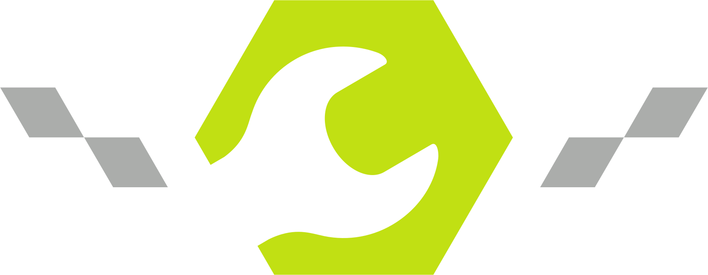
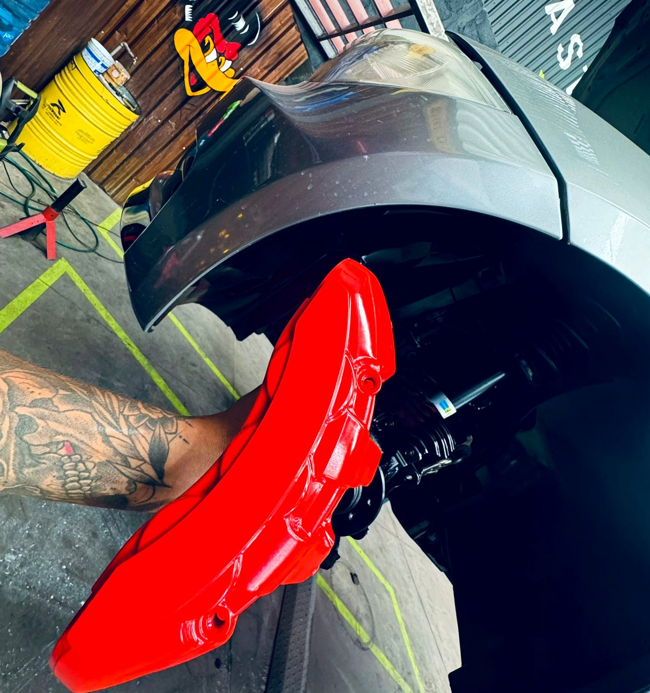

Street
Frenado confiable para el día a día.
Ideal para quien busca un servicio funcional, seguro y bien ejecutado para uso cotidiano.
- Revisión del sistema de frenado
- Cambio de balatas y discos
- Líquido y componentes de freno
Brindamos atención profesional, rápida y confiable para resolver ruidos, vibraciones o pérdida de frenado. En MASTERBRAKES cuidamos tu seguridad con soluciones precisas para que tu auto vuelva a frenar como debe. Cotiza hoy.
Conoce nuestras líneas de servicio para tu sistema de frenado. Te orientamos desde el cambio de balatas y discos hasta soluciones premium y performance, además de otros servicios automotrices para mantener tu vehículo en excelente estado.

Seguridad en cada trayecto. El sistema de frenos es uno de los componentes más importantes de tu vehículo. Un mantenimiento adecuado de balatas, discos y líquido de frenos ayuda a conservar una respuesta de frenado eficiente y a prevenir desgaste prematuro, ruidos, vibraciones y situaciones de riesgo. Objetivo: brindarte mayor seguridad, confianza y respuesta al momento de frenar.
Frenado confiable para el día a día.
Ideal para quien busca un servicio funcional, seguro y bien ejecutado para uso cotidiano.

Mayor nivel de componentes y atención para tu vehículo.
Enfoque pensado para quienes desean un servicio más completo, con mejor configuración y mayor detalle técnico.

Mejora y personaliza el sistema de frenado de tu auto.
La opción para quienes quieren un sistema con presencia visual, upgrades y una respuesta más especializada.
Estabilidad, comodidad y seguridad.
La suspensión mantiene el vehículo estable y ayuda a absorber las irregularidades del camino. Revisarla oportunamente permite detectar desgaste en sus componentes y prevenir vibraciones, ruidos, desgaste irregular de las llantas y pérdida de estabilidad.
Mantenimiento para mantener tu vehículo en forma.
Una afinación ayuda a conservar el buen funcionamiento del motor y detectar oportunamente componentes que requieren atención. Realizarla de manera preventiva puede ayudar a evitar fallas, consumo innecesario de combustible y pérdida de rendimiento.
Respuesta y funcionamiento correcto.
El clutch permite transmitir correctamente la potencia del motor hacia la transmisión. Cuando presenta desgaste pueden aparecer dificultades para cambiar velocidades, vibraciones o pérdida de respuesta.
Soluciones para las necesidades de tu vehículo.
Cada vehículo tiene diferentes necesidades de mantenimiento y reparación. En MASTERBRAKES podemos revisar tu caso y orientarte sobre la solución adecuada, desde mantenimiento preventivo hasta reparaciones y mejoras especializadas.
Compártenos tu auto y el servicio que buscas.
Revisamos el sistema o componente para identificar lo que necesita tu auto.
Te presentamos la opción adecuada para tu vehículo y tu necesidad.
Realizamos el servicio y dejamos tu sistema listo para volver a la carretera.
Sombrerete es una de nuestras sucursales principales. Elige la ubicación que te quede más cómoda, envíanos WhatsApp y agenda tu servicio.
Av. Cerro Sombrerete 1150, Balcones de San Pablo, C.P. 76125, Santiago de Querétaro, Qro.
Tel. 442 813 3715
★ 4.4/5 · 24 opiniones en Google
Av. Pie de la Cuesta 334, Nacional, C.P. 76148, Santiago de Querétaro, Qro.
Tel. 442 186 8438
★ 4.2/5 · 114 opiniones en Google
Resolvemos tus dudas desde las señales que presenta tu vehículo hasta el servicio que puede necesitar.
La vibración puede relacionarse con el estado de discos, balatas u otros componentes. Lo recomendable es revisar el sistema para identificar la causa y atenderla antes de que avance el desgaste.
Un ruido puede aparecer por desgaste, condición de balatas, discos u otros componentes. Un diagnóstico permite determinar qué necesita el vehículo.
Cambios en la sensación del pedal son una señal para revisar el sistema de frenado y determinar la causa antes de continuar con el uso normal del vehículo.
Cuando aparecen vibraciones, ruidos, desgaste irregular de las llantas o pérdida de estabilidad. Revisarla oportunamente ayuda a detectar desgaste en sus componentes.
Una afinación ayuda a conservar el buen funcionamiento del motor y detectar oportunamente componentes que requieren atención. El mantenimiento preventivo puede ayudar a evitar fallas y pérdida de rendimiento.
Dificultades para cambiar velocidades, vibraciones o pérdida de respuesta pueden aparecer cuando el clutch presenta desgaste y requiere revisión.
Sí. MASTERBRAKES puede revisar tu caso y orientarte sobre la solución adecuada, desde mantenimiento preventivo hasta reparaciones y mejoras especializadas.
Llena el formulario con los datos de tu vehículo, elige sucursal y servicio y envíalo directamente por WhatsApp.
Selecciona tu sucursal, agrega los datos de tu auto y dinos qué necesitas. Envíalo por WhatsApp y recibe atención directa.